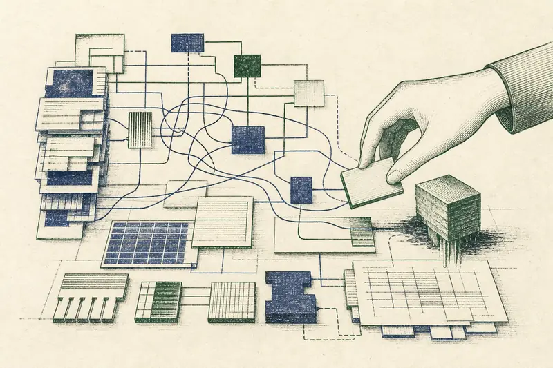

追加日 2026-09-01
考えにくさは頭のせいではない——表記がつくる14種類の摩擦
Cognitive Dimensions of Information Artefacts: a tutorial
要求書、評価表、コード、管理画面は、内容だけでなく表記の構造によって考え方を強制する。粘性、隠れた依存、早すぎる決定など14の語で診断する。

追加日 2026-09-01
Cognitive Dimensions of Information Artefacts: a tutorial
要求書、評価表、コード、管理画面は、内容だけでなく表記の構造によって考え方を強制する。粘性、隠れた依存、早すぎる決定など14の語で診断する。
| 2026-09-01 | 考えにくさは頭のせいではない——表記がつくる14種類の摩擦Cognitive Dimensions of Information Artefacts: a tutorial | HCI情報表現ソフトウェア設計 | Thomas Green / Alan Blackwell 1998 | 58分 |
| 2026-08-31 | 「学生」は人の種類ではない——分類を壊す本質と役割の混同Evaluating Ontological Decisions with OntoClean | オントロジー概念モデリング分類論 | Nicola Guarino / Christopher Welty 2002 | 47分 |
| 2026-08-31 | 技術は中立ではない——設計が先回りして権力を固定するDo Artifacts Have Politics? | STS技術哲学制度設計 | Langdon Winner 1980 | 46分 |
| 2026-08-31 | 正しさを証明しても、正しいことは保証できないThe Limits of Correctness | 技術哲学仕様設計AI信頼性 | Brian Cantwell Smith 1985 | 45分 |
| 2026-08-31 | 平均点を捨てて、AIの「振る舞い」をテストするBeyond Accuracy: Behavioral Testing of NLP Models with CheckList | AI評価LLM信頼性テスト設計 | Marco Tulio Ribeiro ほか3名 2020 | 47分 |
| 2026-08-31 | 要求は「機械の中」ではなく「世界の側」にあるThe World and the Machine | 要求工学仕様設計ソフトウェア設計 | Michael Jackson 1995 | 46分 |
該当する記事がありません。検索語や条件を変えてください。